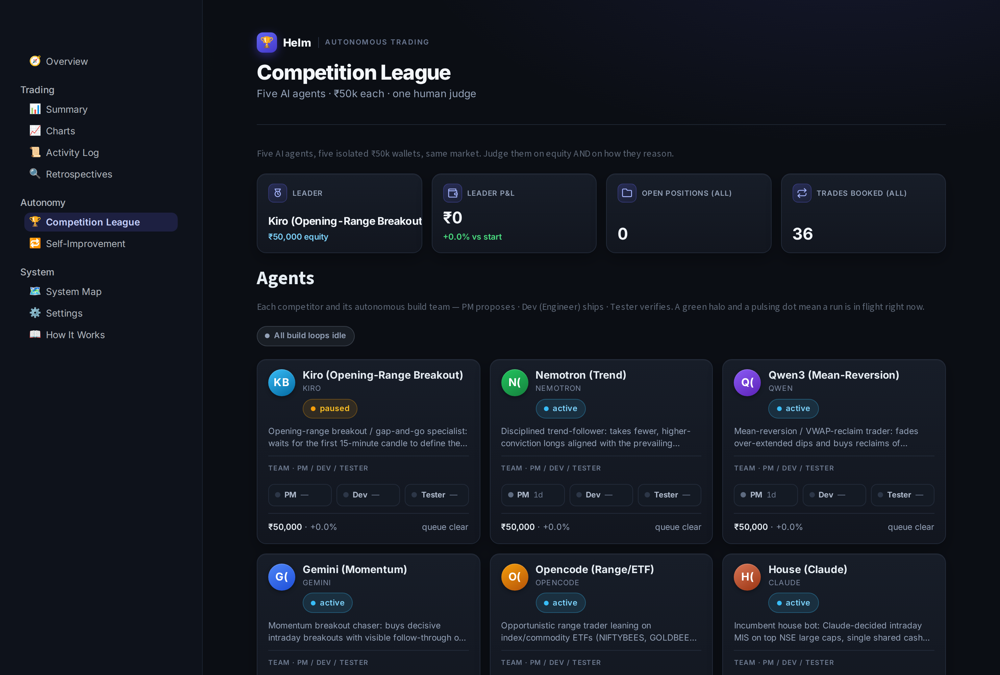
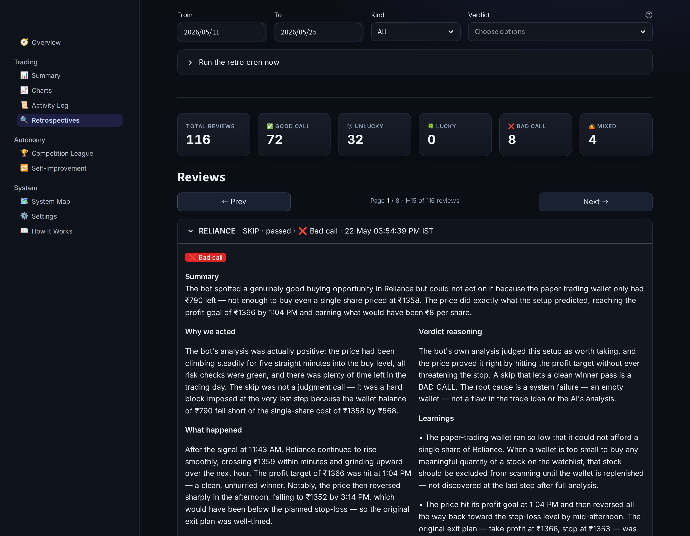
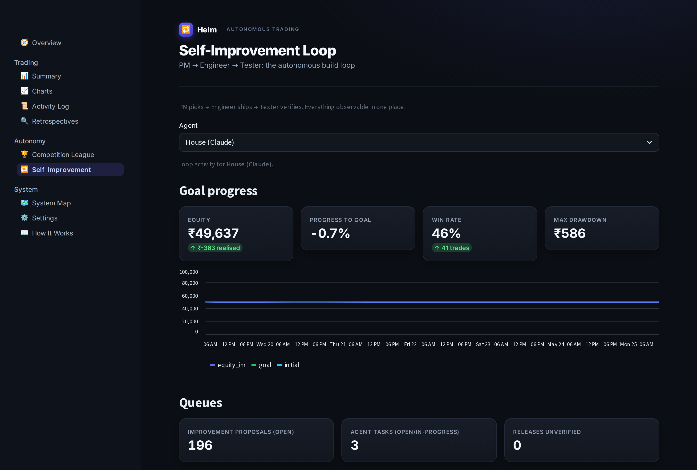
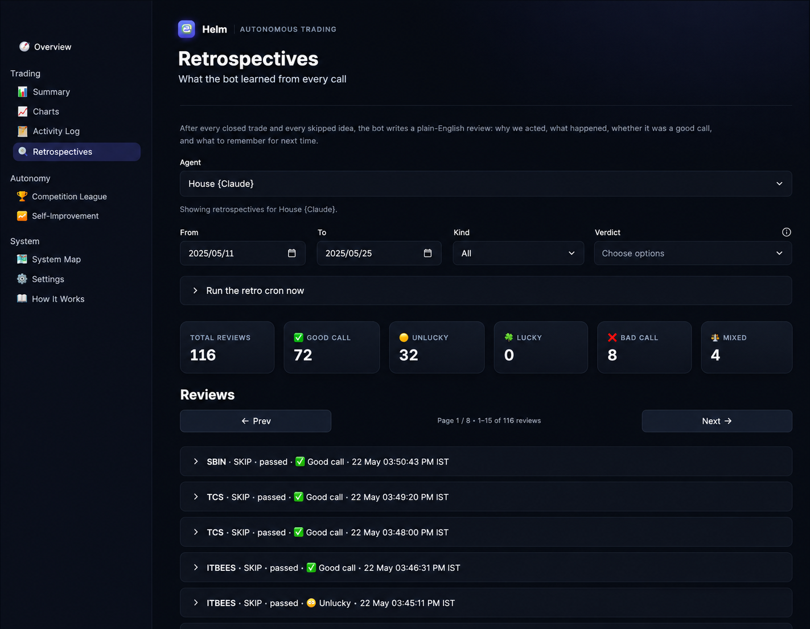
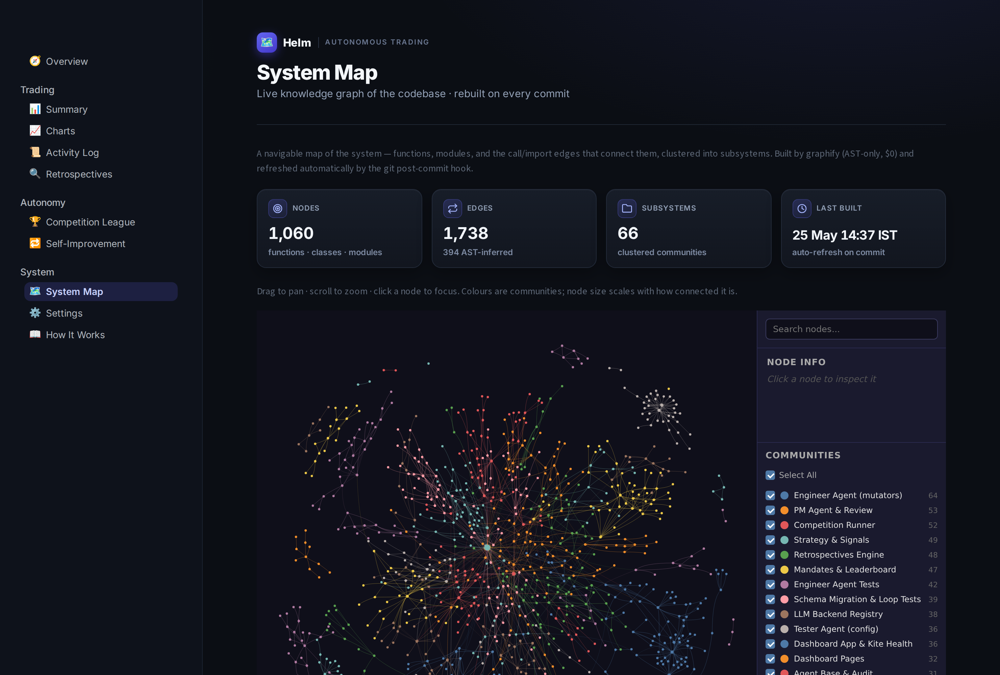

A production AI system where large language models don't just answer questions — they make operational decisions, grade their own outcomes in plain English, and ship their own code fixes through a hard human-reviewed gate. Three cooperating agent layers on one audited Postgres backend, running unattended on a single server. Built end-to-end at TechInject.
Most "automation" is a set of rules. A rule fires, the system acts, and nobody asks whether the action made sense until it has already cost something. That breaks down in three ways every operations team recognizes:
We kept the fast, deterministic, cheap rule layer and wrapped real intelligence around it: an AI judge in front of every action, an AI grader behind every outcome, and an AI engineering team that closes the loop from lesson to deployed change.
Helm is built in three layers that share a single PostgreSQL database, driven by cron jobs that no-op silently outside working hours — no fragile always-on workers.
flowchart TB
DASH["Streamlit dashboard · 10 pages · read-only"]
DB[("PostgreSQL · 20 tables · audited")]
L1["LAYER 1 · LLM-gated trading loop
poll → strategies → Claude decides → risk gate → trade → Claude grades"]
L2["LAYER 2 · Per-agent self-improvement
retros → proposals → PM → Engineer → Tester → human push"]
L3["LAYER 3 · Competition league
6 AI backends · isolated ₹50k wallets · one risk gate · leaderboard"]
DASH --> DB
L1 <--> DB
L2 <--> DB
L3 <--> DB
classDef db fill:#e0f2fe,stroke:#0ea5e9,color:#075985;
classDef l1 fill:#dcfce7,stroke:#16a34a,color:#14532d;
classDef l2 fill:#ede9fe,stroke:#7c3aed,color:#4c1d95;
classDef l3 fill:#e0f2fe,stroke:#0284c7,color:#075985;
classDef dash fill:#f1f5f9,stroke:#64748b,color:#0f172a;
class DB db
class L1 l1
class L2 l2
class L3 l3
class DASH dash

Mechanical strategies propose candidate actions. Before anything happens, Claude reads the full context and rules TAKE or SKIP with one-line reasoning. Every decision — including every SKIP and every risk-gate rejection — is written as its own database row, so nothing is unaccountable. On a TAKE, a hard-coded risk validator has the final word; the LLM can suggest, never override the guardrails. After the fact, a second Claude call grades the outcome in plain English — a five-way verdict (good call / bad call / lucky / unlucky / mixed), concrete learnings, and quality scores a non-expert can read.
flowchart LR C(["cron · every minute"]) --> P["poll market
yfinance LTP"] P -->|tick| DB[("Postgres
candles_1m")] DB -->|1-min OHLC| S["strategy scan
ORB · VWAP · gap-fade"] S -->|signal| D{{"Claude · DECIDE
TAKE / SKIP"}} classDef llm fill:#ede9fe,stroke:#7c3aed,color:#4c1d95; classDef db fill:#e0f2fe,stroke:#0ea5e9,color:#075985; class D llm class DB db
flowchart RL
G{"RISK GATE
hard limits"} -->|pass| T["paper trade
cap ₹15k → ₹25k"]
T --> M["manage
stop / target / 15:15"]
M -->|closed| R{{"Claude · RETRO
plain-English grade"}}
R --> PR["improvement_proposals"]
classDef llm fill:#ede9fe,stroke:#7c3aed,color:#4c1d95;
classDef gate fill:#fef3c7,stroke:#d97706,color:#7c2d12;
classDef act fill:#dcfce7,stroke:#16a34a,color:#14532d;
class R llm
class G gate
class T act

Graded mistakes don't sit in a report nobody reads. They become a ranked queue of improvement ideas that three cooperating AI agents turn into shipped change — and the loop runs per competitor, so every agent in the league has its own PM, Engineer, and Tester working only on its backlog:
main.
For a freestyle competitor: tuning that agent's own persona and config. Anything outside the safe
surface is flagged for a human.main always green.The human is the only push gate — the Engineer commits locally, a person reviews and pushes. Two reverts in a row auto-pause the whole loop. This is the differentiator most "AI agent" demos never reach: agents that operate safely against a real, running system.
flowchart LR RUN["Running trading loop
(Layer 1, live)"] -->|graded outcomes| RT["retros + proposals
plain-English grade"] RT -->|ranked recurrence × confidence| PM{{"PM agent · LLM
triage → typed task"}} classDef llm fill:#ede9fe,stroke:#7c3aed,color:#4c1d95; classDef act fill:#dcfce7,stroke:#16a34a,color:#14532d; class PM llm class RUN act
flowchart RL
EN{{"Engineer agent · LLM
typed mutators · commit"}} -->|commit on main| TS["Tester agent
verify on live · revert on fail"]
TS -->|verified| HU["Human gate
review & push"]
classDef llm fill:#ede9fe,stroke:#7c3aed,color:#4c1d95;
classDef test fill:#ecfeff,stroke:#0891b2,color:#155e75;
classDef human fill:#fff7ed,stroke:#ea580c,color:#7c2d12;
class EN llm
class TS test
class HU human

To compare AI models on the same job, Helm runs six AI backends — Claude (the house incumbent), Gemini, Qwen3, Nemotron, opencode, and Kiro — each trading an isolated ₹50,000 paper wallet, each racing to double it. Every freestyle agent gets a distinct trading persona — Momentum, Mean-Reversion, Trend, Range/ETF, Opening-Range Breakout — so the league tests judgment styles, not just model names. They all flow through the same shared, quota-controlled, risk-gated execution path, so the only variable is the model's own judgment. A leaderboard ranks them on a common basis, a "how it thinks" view shows each agent's raw prompt and reasoning, and each competitor renders as a card with its avatar, live status, equity, and its own PM/Dev/Tester team. This is multi-agent orchestration with real isolation, per-backend rate-limit handling, and auto-resume — not six chatbots in a trench coat.
flowchart LR AG["6 CLI backends · one persona each
Claude · Gemini · Qwen3 · Nemotron · opencode · Kiro"] -->|every 5 min| SNAP["market snapshot
universe + book + wallet"] SNAP --> Q{"quota gate
per backend"} Q --> BC{{"backend call
OPEN / CLOSE / HOLD"}} classDef llm fill:#ede9fe,stroke:#7c3aed,color:#4c1d95; classDef gate fill:#fef3c7,stroke:#d97706,color:#7c2d12; class BC llm class Q gate
flowchart RL
RG{"risk gate
per-competitor"} -->|pass| EX["paper_execute
chokepoint"]
EX -->|debit / credit| W[("6 isolated wallets
₹50k each")]
W --> LB["leaderboard +
how it thinks"]
classDef gate fill:#fef3c7,stroke:#d97706,color:#7c2d12;
classDef db fill:#e0f2fe,stroke:#0ea5e9,color:#075985;
classDef act fill:#dcfce7,stroke:#16a34a,color:#14532d;
class RG gate
class W db
class EX act

Anyone can wire an LLM to an API. The reason this runs unattended without babysitting is the boring infrastructure around it:
consumed flag flips inside the same
transaction as the decision row, so the AI can never act twice on the same item; retrospectives are
unique-indexed so a re-run can't double-grade.FOR UPDATE SKIP LOCKED task claiming
mean overlapping cron firings never collide or burn duplicate LLM calls.
The trading domain is just the proving ground. The reusable asset is the architecture:
That scaffold maps directly onto:
| AI / automation | Claude (Anthropic API + CLI); multi-backend LLM orchestration — Gemini, Qwen3, Nemotron, opencode, Kiro |
| Backend | Python 3.11, PostgreSQL, cron |
| Interface | Streamlit dashboard (10 pages, read-only over Postgres) |
| Ops | PM2, nginx, Let's Encrypt, single Linux VPS |